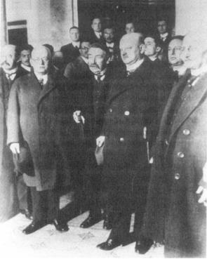

Hans Luther, Anstide Briand ve Gustav Stresemann
Milletler Cemiyeti’nde Alman Delegeleri ile
III. William’dan beri Avrupa’da uygulanan güç dengesi diplomasisinin bütün prensipleri, Büyük Britanya ve Fransa’nın huzursuz komşularının revizyonist davranışlarını dizginlemek için bir Alman karşıtı ittifak oluşturmasını gerektiriyordu. Nihai olarak, Büyük Britanya ve Fransa, yenilmiş bir Almanya’dan bile daha zayıftılar ve dengesizliği ancak bir koalisyonla giderebileceklerini ümit edebilirlerdi. Fakat bu koalisyon hiçbir zaman gerçekleşmemiştir. Büyük Britanya, üç yüzyıllık politikasının özelliğini oluşturan denge politikasını izlemekten vazgeçti, İngiltere, Fransa’yı hedef alan güç dengesi prensibinin yüzeysel uygulaması ile yeni ortak güvenlik sistemine gittikçe artan bağlılığı arasında bir saat rakkası gibi gitti geldi. Fransa, Almanya’nın kalkınmasını geciktirmek için bir taraftan Versay Antlaşması’nı kullanırken, diğer taraftan meşum komşusunu yatıştırmak için isteksiz çabalarda bulunarak ümitsizlik içeren bir dış politika izliyordu. 1920’lerin diplomatik manzarasına en etkili tarzda şekil verecek devlet adamı, Gustav Stresemann’ın, yenen devletlerden değil de yenilen Almanya’dan çıkması böyle mümkün oldu.
Ama Stresemann ortaya çıkmadan önce, kendi çabaları ile güvenliğini sağlamak için başarısızlığa mahkûm bir hareket daha Fransa tarafından yapıldı. 1922 sonunda ele geçmeyen tazminata, tartışmalı silahsızlanmanın, ortada görülmeyen İngiliz güvenlik garantisinin ve Alman-Rus yakınlaşmasının yer aldığı ortamda, Fransa kendisini sabrının son kertesinde buldu. Savaş dönemindeki Cumhurbaşkanı Raymond Poincare, başbakanlığı devraldı ve Versay Antlaşması’nın tazminat maddesini tek taraflı olarak uygulama yönünde karar verdi. Ocak 1923’te, Fransız ve Belçika birlikleri diğer itilaf Devletleri’ne danışmadan, Alman sanayinin kalbi olan Ruhr’u işgal etti.
Yıllar sonra, Lloyd George şöyle diyecekti: “Rapallo olmasaydı, Ruhr da olmayacaktı.”{342} Fakat şu da doğrudur ki, Büyük Britanya, Fransa’nın istediği güvenlik garantilerini vermiş olsa idi, Fransa böyle ümitsiz bir şekilde Almanya sanayinin kalbi durumundaki Ruhr’u işgal etmeyecekti. Aynı şekilde, Fransa tazminat ve silahsızlanma konularında daha uzlaşmacı bir tutum takınsa idi, Büyük Britanya bir ittifak yapma konusunda daha istekli olabilirdi, İngiliz kamuoyunun pasifist tutumu karşısında bu ittifakın ne derece anlamlı olacağı, sorulması gereken başka bir sorudur.
Fransa’nın tek taraflı askeri hareketi, tam tersine Fransa’nın tek başına hareket etme yeteneğini kaybettiğini gösterdi. Fransa Ruhr bölgesi sanayinin kontrolünü, Almanların ödemeyi reddettiği savaş tazminatı yerine geçmek üzere çelik ve kömür kaynaklarını kullanmak için almıştı. Alman hükümeti, çelik ve kömür işçilerine pasif direniş emrini verdi ve çalışmamaları için ücret ödedi. Her ne kadar bu politika Alman hükümetini iflas ettirmiş ve yüksek enflasyonu ateşlemiş ise de, Fransa amacına ulaşamadı ve Ruhr’un işgali Fransa için büyük bir başarısızlık oldu.
Fransa şimdi büsbütün yalnızlığa itilmişti. Birleşik Devletler, kendi işgal ordusunu Ren’den çekmek suretiyle hoşnutsuzluğunu gösterdi. Büyük Britanya öfkelendi, itilaf Devletleri arasında bu ayrılığı gören Almanya, Büyük Britanya’ya yaklaşmak için bu fırsatı kullandı. Fransız işgaline karşı gösterilen sert ulusal direniş, bazı Alman liderlerine eski Anglo-Alman ittifakı projesini yeniden canlandırma ilhamı verdi. Bu da Almanya’nın, seçenekleri olduğundan fazla tahmin etmek konusunda kökleşmiş eğiliminin başka bir örneğidir. Berlin’deki İngiliz Büyükelçisi Lord D’Abernon, ileri gelen bir Alman devlet adamı ile yaptığı bir konuşmayı Londra’ya rapor etti. Bu konuşmada, İmparatorluk Almanya’sı ile İngiltere arasında bir ittifak yapılması argümanları yeniden canlandırılıyor ve “1914’deki durum bugün tersine dönmüştür” deniliyordu. “1914’te İngiltere, Avrupa’nın askeri bir hegemonya altına girmemesi için Almanya ile savaştığına göre, birkaç yıl içinde aynı nedenle Fransa’yla da savaşabilir. Sorun, İngiltere’nin bu savaşı tek başına mı yapacağı, yoksa müttefike gereksinimi olup olmayacağıdır.”{343}
Sorumluluk taşıyan hiçbir İngiliz lider, ülkesini Almanya ile müttefik yapacak kadar ileri gitmeyi düşünmemiştir. Bununla beraber, Ağustos 1923’te Dışişleri Bakanı Curzon ve bakanlık yetkililerinden Sir Eyre Crowe (1907 Crowe Memoramdumu’nun yazarı), Fransa’dan, Ruhr’daki hareketini gelecekte olabilecek bir Alman krizinde Büyük Britanya’nın desteğini kaybetme riski karşısında yeniden gözden geçirmesini istedi. Poincare hiç etkilenmedi, İngiltere’nin desteğinin Fransa’ya bir iyilik değil, gerçekte İngilizlerin, ulusal çıkarlarının bir gereği olarak görüyordu: “... İngiltere, kendi çıkarları bakımından eskiden aldığı aynı önlemleri yine almak zorunda kalacaktır.”{344}
Poincare’nin, 1914’tekine benzer bir durumla karşılaşınca Büyük Britanya’nın son seçiminin ne olacağı hakkındaki düşüncesi doğru çıktı. Fakat, Büyük Britanya’nın gerçekten aynı krizle karşı karşıya olduğunu fark etmesinin ne kadar zaman alacağı konusunda hesap hatası yaptı ve aradan geçen zamanda, zaten ayakta zor duran Versay sistemi altüst oldu.
Ruhr’ın işgali 1923’ün sonbaharında sona erdi. Fransa Ruhr’da, hatta Versay Antlaşması şartlarına göre Alman ordusunun girmesine izin verilmeyen ve bu nedenle bir ayrılıkçı hareketi bastırmak için hiçbir şey yapamayacağı Ren bölgesinde bile önemli bir ayrılıkçı hareket başlatmayı başaramadı, işgal boyunca çıkarılan kömür, ancak bölgenin yönetim masraflarına yetti. Bu esnada Almanya’nın etrafı, Saksonya (Politik soldan) ve Bavyera’da gelişen (Politik sağdan) ayaklanmalarla çevrilmişti. Başını almış giden enflasyon, Alman hükümetinin taahhütlerinden herhangi birini yerine getirme yeteneğini tehdit eder olmuştu. Fransa’nın tazminat konusundaki ısrarı, yine Fransa’nın hareketleri dolayısıyla gerçekleştirilemez durumda idi.
Fransa ve Büyük Britanya, birbirlerini mat etmeği başardılar: Fransa, tek taraflı hareket ederek Almanya’yı zayıf düşürmek konusundaki ısrarı ve bu nedenle İngiliz desteğini kaybetmesi ile; Büyük Britanya, güç dengesi üzerindeki etkisini düşünmeden uzlaşma konusundaki ısrarı ve böylece Fransa’nın güvenliğini tehlikeye sokması ile. Silahsızlanmış Almanya bile, Fransa’nın tek taraflı hareketini önleyecek kadar güçlü idi. Almanya, Versay zincirlerini parçalayıp atınca neler olacağını tahmin etmek için kâhin olmaya gerek yoktu.
1920’lerde demokrasiler, ne zaman bir çıkmaz sokağa geldilerse, jeopolitik gerçeklerle yüz yüze gelmektense, Milletler Cemiyeti’ni devreye sokmayı yeğlediler, İngiliz genelkurmayı bile bu konuda tuzağa düştü. Önceki bölümde aktarılan Almanya’yı başlıca tehlike sayan ve Fransa’nın etkili direnme yapmaktan yoksun olduğunu belirten memorandum bile bilinen görüşlere yenik düştü. Sonuç bölümünde genelkurmay, cemiyeti “kuvvetlendirmekten” (ne anlama geliyorsa) ve “Almanya çılgın gibi sağa sola saldırdığı zaman... bu durumlara uyacak ad hoc ittifaklar”{345} yapılmasından başka bir görüş ileri sürmüyordu.
Bu öneri, başarısızlığı tam olarak garanti ediyordu. Cemiyet çok bölünmüştü ve Almanya kontrolden çıktığı zaman, ittifakları oluşturmak için vakit çok geç olacaktı. Şimdi savaş öncesinden daha sağlam bir uzun vadeli pozisyonu güvence altına alması için Almanya’nın tek ihtiyacı olan şey, yeterince ileri görüşlü ve Versay Antlaşması’nın ayırımcı hükümlerini aşındıracak sabra sahip bir devlet adamı idi.
Böyle bir lider 1923’te ortaya çıktı. Gustav Stresemann, önce dışişleri bakanı sonra da başbakan oldu. Stresemann’ın Almanya’nın gücünü yenileme metodu, sonradan “yerine getirme” politikası olarak anılmıştır. Bu politika, önceki Alman politikasının tamamen tersi ve Versay Antlaşması hükümlerine karşı kendisinden öncekilerin açtığı diplomatik gerilla savaşının terki anlamına gelmekteydi. “Yerine getirme” politikası, Büyük Britanya ile Fransa’nın, kendi ilkeleriyle Versay şartları arasındaki farklılıktan duydukları rahatsızlıktan yararlanma prensibine dayanıyordu. Kolaylaştırılmış tazminat takvimine uyma konusundaki Almanya’nın çabasına karşılık olmak üzere, Stresemann, Versay’ın en tatsız politik ve askeri hükümlerinden, itilaf Devletleri’nin yardımıyla kurtulmak için çaba harcadı.
Savaşta yenilmiş ve yabancı kuvvetler tarafından kısmen işgal edilmiş bir ulusun karşısında iki seçenek vardır: Barışın uygulanmasını galip devletler için zorlaştırmak ümidiyle onlara meydan okumak veya sonradan hesaplaşmak için kuvvet kazanırken galip devletlerle işbirliği yapmak, iki stratejinin de riskli taraftan vardır. Askeri bir yenilgiden sonra direnmek, en zayıf bulunulduğu zamanda bir kuvvet denemesini davet eder; işbirliğinin riski ise, galibe karşı izlenen politikaların halkın kafasını karıştırarak demoralize olmasına sebep olmasıdır.
Almanya Stresemann’dan önce direnme politikası izlemiştir. Çatışma taktikleri, Almanya’yı Ruhr krizinde başarılı kıldı; fakat Fransa’nın Ruhr’dan çekilmesi, Almanya’nın üzüntüsünü pek yatıştırmadı. Alsace-Lorraine’in Fransa’ya geri verilmesinin çok sorun yaratmaması hayret vericiydi. Fakat Almanya’nın sınırlarının yeniden belirlenmesi, yani Polonya’ya geniş Alman toprakları verilmesi, ateşli bir ulusal direnişle karşılaştı. Son olarak, Alman askeri gücü üzerindeki sınırlamaların kaldırılması için de büyük bir baskı vardı, itilaf Devletleri’nin tazminat taleplerinin bir skandal olduğu üzerinde ise hemen hemen bütün Almanya’da oybirliği vardı.
Milliyetçilerin aksine Stresemann, Versay Antlaşması ne kadar nefret edilesi olursa olsun, gerçekte kendisi de ondan ne kadar nefret ederse etsin, Versay’ın en ağır hükümlerini kaldırmak için İngilizlerin ve kısmen de Fransızların yardımına gereksinimi olduğunu biliyordu. Rapallo Anlaşması, Batı demokrasilerinin sinirlerini bozmak için faydalı bir taktikti. Fakat Sovyetler Birliği, Almanya’nın ekonomik kalkınmasına yardım edemeyecek kadar fakirleşmiş ve diplomatik hesaplaşmada destek sağlayamayacak kadar yalnızlaştırılmıştı; Rusya’nın etkisi, ancak Almanya kendisi Versay Antlaşması’na açıkça meydan okuyacak kadar kuvvetlenince hissedilecekti. Hepsinden önemlisi, ekonomik toparlanma Almanya’nın dış borç almasını gerektiriyordu ki, bir hesaplaşma atmosferinde Almanya’nın bu krediyi bulması çok zordu. Böylece, Stresemann’ın yerine getirme politikası, Almanya’nın politik ve ekonomik toparlanmasının gereksinimlerinin realist bir değerlendirmesini yansıtıyordu: “Almanya’nın başlıca askeri zayıflığı, Alman dış politikasının da sınırlarını, doğasını ve metotlarını belirlemektedir”{346} diye yazıyor Stresemann.
Her ne kadar yerine getirme politikası gerçekçilik üzerine oturtulmuş ise de, gerçekçilik, savaş sonrası Almanya’sında (özellikle muhafazakâr çevrelerde), muhafazakâr politikaların I. Dünya Savaşı’nın çıkmasına neden olduğu günlerden daha sık rastlanan bir kavram değildi. Alman kuvvetleri hâlâ İtilaf Devletleri topraklarında iken savaşa son verilmesi, Almanya’nın savaşa sokulmasından sorumlu kişilere aptallıklarının sonucundan kurtulmak ve bu sorumluluğu, yerlerine gelen daha ılımlı yöneticilerin sırtlarına yüklemek için fırsat verdi. Lloyd George, 26 Ekim 1918’de Savaş Kabinesi’ne, Almanya’nın ilk barış girişimlerinden söz ettiği zaman bu sonucu önceden görmüştü:
“Başbakan, sanayici Fransa’nın yerle bir edildiğini ve Almanya’nın bundan kurtulduğunu söyledi. Bizim kamçıyı Almanya’nın sırtına vuracak duruma geldiğimiz ilk anda, Almanya “vazgeçiyorum” dedi. Sorun, onun Fransa’ya yaptığı gibi, bizlerin de onu kamçılamaya devam edip etmeyeceğimizdi.”{347}
Ancak arkadaşları, Büyük Britanya’nın böyle bir yol izleyemeyecek kadar bitkin olduğunu söyledi: Dışişleri Bakanı Austen Chamberlain, yorgun bir şekilde şöyle cevap verdi: “Öç almak bugünlerde çok pahalıya mal olmaktadır.”{348}
Lloyd George’un tahmin ettiği gibi, yüksek askeri kumandanlık tarafından elde edilemeyecek kadar cömert barış şartları sağlanmışsa da, daha kuruluşundan itibaren yeni Weimar Cumhuriyeti, çevresi milliyetçi kışkırtıcılar tarafından kuşatılmış durumdaydı. Almanya’nın yeni demokratik liderleri, çok güç şartlar altında ülkelerinin özünü korumayı başardıklarından dolayı ödüllendirilmediler. Politikada, zararı hafifletenler için çok az ödül vardır; çünkü daha kötü sonuçların olabileceğini kanıtlamak, çok seyrek olarak mümkündür.
İki kuşak sonra Amerika’nın Çin’e açılmasını muhafazakâr bir başkanın sağlaması gibi, ancak Stresemann gibi tam muhafazakâr bir lider, Alman dış politikasını nefret edilen Versay düzenlemesi ile belirsiz de olsa bir işbirliği üzerine oturtmayı düşünebilirdi. Bir bira distribütörünün oğlu olan Stresemann, 1878’de Berlin’de doğdu ve politik kariyerini, muhafazakâr iş dünyası taraftarı olan burjuva Milliyetçi Liberal Parti’nin görüşlerini benimseyerek yaptı. 1917’de parti liderliğine yükseldi. Çok neşeli, edebiyat ve tarihi seven ve konuşmalarında Alman klasiklerinden alıntılar yapan bir insandı. Ancak dış politika hakkındaki ilk görüşleri, geleneksel muhafazakâr anlayışı yansıtıyordu. Örneğin Almanya’nın, üstünlüğünü korumaya kararlı kıskanç bir İngiltere tarafından kandırılarak savaşa sokulduğu inancında idi.
1917 gibi geç bir tarihte, Stresemann Doğu’da ve Batı’da geniş fetihler yapılmasını, Fransız ve İngilizlerin Asya ve Afrika’daki sömürgelerinin Alman topraklarına katılmasını savunuyordu. Aynı zamanda sınır tanımayan denizaltı savaşını da destekliyordu ki, bu karar Amerika’yı savaşa sokmuştur. Versay Antlaşması’na “tarihin en büyük dolandırıcılık olayı”{349} diyen adamın, yerine getirme politikasını başlatması, Realpolitik’in ılımlı olmanın faydalarını öğretemeyeceğine inanan kimseler için olayların garip bir tecellisi olacak görülmektedir.
Stresemann, savaş sonrası Almanya’nın Versay düzenlemesinin Almanya’ya sağladığı jeopolitik avantajları kullanan ilk lideri ve içlerinde tek demokratik olan liderdi. Fransız-İngiliz ilişkilerinin kolay bozulabilir doğasını çok iyi kavramıştı ve bunu iki savaş müttefiki arasındaki açıklığı genişletmek için kullandı, İngilizlerdeki, Fransa ve Sovyetler Birliği’ne karşı Almanya’nın tamamen çökmesi korkusunu akıllıca bir şekilde işledi. Resmi bir İngiliz analist, Almanya’yı Bolşevizm’in karşı yayılmasına hayati bir siper olarak tanımlarken “yerine getirme” politikasının ilerlemekte olduğunu gösteren argümanlar kullandı. Alman hükümeti, “Ulusal Meclis’in çoğunluğu tarafından desteklenen, gerçekten demokrat bir hükümet olup Barış Antlaşması’nı gücü yettiğince yerine getirmek niyetindedir ve İtilaf Devletleri’nin samimi desteğini hak etmiştir.” İngiliz desteği sağlanamazsa, Almanya “kaçınılmaz bir şekilde Bolşevizm’e çekilecek ve nihai olarak tekrar mutlak krallığa dönecektir.”{350}
Büyük Britanya’nın Almanya lehine yardımı savunan argümanları, Yeltsin döneminde Rusya’ya yardım konusunda Amerika’nın önerilerine çok benzemektedir. Her iki olayda da savunulan politikanın “başarısı”nın sonuçlarının değerlendirilmesi yapılmamıştır. Eğer “yerine getirme” başarılı olsaydı, Almanya gittikçe güçlenecek ve Avrupa dengesini tehdit eden bir pozisyonda olacaktı. Bunun gibi, Soğuk Savaş sonrası Rusya’ya uluslararası yardım programının amacı gerçekleşirse, büyüyen Rus gücü eski Rus İmparatorluğu’nun geniş çevresinde jeopolitik sonuçlar yaratacaktı.
Her iki olayda da, uzlaşma taraftarlarının olumlu, hatta ileri görüşlü amaçları vardı. Batı demokrasileri, Stresemann’ın yerine getirme politikasına uygun hareket etmekle akıllılık yapmışlardır. Fakat, kendi aralarındaki bağları kuvvetlendirmediklerinden dolayı hatalıdırlar. Yerine getirme politikasının, General von Seeckt tarafından tanımlanan günü daha da yakınlaştırması kaçınılmazdı: “Eski gücümüzü yeniden kazanmalıyız ve bunu yapar yapmaz, kaybettiğimiz her şeyi doğal olarak geri alacağız.”{351} Amerika, savaş sonrası Rusya’ya yardım etmekle ileri görüşlü davranmıştır fakat Rusya’nın ekonomik bunalımı atlatınca komşu ülkelere baskısını artıracağı kesindir. Bu belki ödenmesi gereken bir bedel olarak kabul edilebilir; fakat bu işin bir bedeli olacağını kabul etmemek hatadır.
Stresemann’ın yerine getirme politikasının başlangıcında nihai amacının ne olduğu önemli değildir. Devamlı bir uzlaşma mı arıyordu, yoksa var olan düzeni yıkmak mı istiyordu veya olasılıkla her iki seçeneği de açık tutmak mı istiyordu, ne olursa olsun, ilk önce Almanya’yı bu tazminat anlaşmazlığından kurtarması gerekiyordu. Fransa hariç, İtilaf Devletleri de bu sorunu çözüp bir an evvel tazminatı almaya başlamak istiyorlardı. Fransa’ya gelince, o Ruhr’u işgal etmekle yarattığı ve kendisine zararı dokunan tuzaktan bir an evvel kurtulmak amacındaydı.
Stresemann, uluslararası bir forumun tazminat konusunda Fransa’dan daha anlayışlı olacağı ümidiyle tazminatın ödenmesinde yeni bir takvim belirlenmesi için sorunun uluslararası hakemliğe götürülmesini önerdi. 1923 Kasımında Fransa, Amerikalı bankacı Charles G. Dawes’un, Fransa’nın tazminat talebini indirecek bir “tarafsız hakem” olarak atanmasını kabul etti. Bu da, savaş zamanı ittifakının dağılışını simgelemektedir. Dawes Komitesi’nin ödeme planını beş yıla uzatan önerisi Nisan 1924’te kabul edildi.
Sonraki beş yıl içinde, Almanya tazminat olarak l milyar dolar ödedi ve çoğu Birleşik Devletler’den olmak üzere 2 milyar dolar kredi aldı. Gerçekte Almanya’nın tazminatını Amerika ödüyordu ve Almanya Amerikan kredisinden arta kalanı sanayini modernize etmek için kullanıyordu. Fransa, Almanya’yı zayıf tutmak için tazminat konusunda ısrar ediyordu. Zayıf bir Almanya ile tazminatı ödeyebilecek güçte bir Almanya arasında seçim yapmak zorunda kalan Fransa, ikinci Almanya’yı seçti; fakat tazminat sistemi, Almanya’nın ekonomisini ve nihai olarak askeri gücünü yeniden yapılandırırken, seyirci kalmaya da mahkûm oldu.
1923 yılının sonunda, Stresemann, başarısını açıklayacak duruma gelmişti:
“Bütün politik ve diplomatik önlemlerimiz, iki Anglosakson devletle isteyerek yaptığımız işbirliği, İtalya’nın komşusundan (Fransa) uzaklaştırılması ve Belçika’nın kararsız duruma getirilmesi; bütün bunlar bir arada Fransa için öyle bir durum yarattı ki, bu ülke uzun dönemde desteksiz ayakta duramayacaktır. “{352}
Stresemann’ın değerlendirmesi doğruydu. Yerine getirme politikası, hem Fransa, hem de tüm Avrupa düzeni için aşılamaz bir çıkmaz yarattı. Fransa’nın güvenliği için, askeri alanda Almanya’ya karşı bir miktar farklılık şarttı; aksi halde, Almanya’nın insan gücü bakımından üstün potansiyeli ve kaynakları galip gelecekti. Fakat eşitlik olmayınca –yani herhangi bir Avrupa ülkesi gibi silahlanma olanağı olmazsa– Almanya, hiçbir zaman Versay sistemini kabul etmeyecek ve yerine getirme politikası işlemeyecekti.
Yerine getirme politikası, İngiliz, diplomatlarını da zor duruma soktu. Büyük Britanya, Almanya’nın askeri bakımdan eşitliğini, Almanya’nın tazminat paralarını ödemesi için bir karşılık olarak tanımazsa, Almanya eski uyuşmaz tavrına tekrar dönecekti. Fakat Almanya için askeri eşitlik, Fransa’yı tehlikeye sokacaktı. Almanya’yı dengelemek için Büyük Britanya, Fransa ile ittifak yapabilirdi fakat Fransa’nın Doğu Avrupa’daki ittifaklarına bulaşmak veya bir parça Polonya veya Çek toprağı için kendisini Almanya ile savaşta bulmak istemiyordu. Austen Chamberlain, 1925’te Bismarck’ın Balkanlar hakkındaki sözlerini başka şekilde söyleyerek şöyle dedi: “Polonya koridoru için hiçbir İngiliz hükümeti, tek bir İngiliz bombacı askerinin kemiklerini feda etmeyi göze alamaz.”{353} Bismarck gibi onun tahminini de olaylar doğrulamadı: Almanya’nın yüzyılın başında savaşa girmesi gibi, Büyük Britanya da savaşa girdi ve bunu devamlı olarak reddettiği bir sebepten dolayı yaptı.
Bu çıkmazdan kaçınmak için, Austen Chamberlain, 1925’te Büyük Britanya, Fransa ve Belçika arasında ve bu devletlerin yalnızca Almanya ile olan sınırlarını güvence altına alan sınırlı bir ittifak fikri geliştirdi. Bu, özünde, batıda Alman saldırısına karşı koymak üzere yapılacak bir askeri ittifaktı. Ancak bu sırada yerine getirme politikası o kadar ilerleme kaydetmişti ki, Stresemann itilaf Devletleri’nin bu inisiyatifi üzerinde neredeyse veto gücüne sahipti. Almanya’nın olası bir saldırgan olarak tanımlanmasını önceden önlemek için, Stresemann Almanya’sız bir paktın Almanya’ya karşı bir pakt olacağını ilan etti.
Almanya’nın savaş öncesi kavgacı politikasının nedeninin çevrelenmek korkusu olduğuna yarı yarıya inanan Chamberlain, geleneksel ittifak ile yeni ortak güvenlik prensibini bir araya getiren garip bir melez anlaşma formülüne döndü, ilk önerilen ittifak kavramını koruyan yeni pakt, İsviçre’de Locarno’da imzalandı. Bu pakt, Fransa, Belçika ve Almanya arasındaki sınırları saldırıya karşı güvence altına alıyordu. Ortak güvenlik sistemine uygun olarak da, ne saldırgan, ne de kurban tahmini yapıyor, fakat hangi yönden gelirse gelsin saldırıya karşı direnme vaadinde bulunuyordu. Casus belli artık belli bir ülke tarafından yapılan belirli bir saldırı fiili değil, herhangi bir ülke tarafından hukuki kuralın bozulması olarak tanımlanıyordu.
1920’lerin ortalarında, yenilmiş Almanya’nın başbakanı Stresemann, galip devletlerin temsilcileri olan Briand ve Chamberlain’den çok daha fazla dümenin başındaydı. Batıda revizyonizmden vazgeçmenin karşılığı olarak, Stresemann, Briand ve Chamberlain’a, Versay Antlaşması’nın doğuda revizyona gereksinimi olduğunu kabul ettirdi. Ülkesi ile Fransa-Belçika devletleri arasındaki batı sınırını ve Ren’in devamlı olarak askerden arındırılmasını kabul etti; Büyük Britanya ve İtalya, ne taraftan gelirse gelsin, Ren’in sınırlarının bozulmasında veya işgalinde yardım etme taahhüdünde bulunarak bu anlaşmayı güvence altına aldı. Aynı zamanda Stresemann, Polonya ile olan sınırı da reddetti ve bu sınırın güvence altına alınması diğer imza sahipleri tarafından da reddedildi. Almanya, bütün anlaşmazlıkların barışçı yollarla çözülmesi sözü vererek, doğu komşuları ile hakemlik anlaşmaları yaptı. Büyük Britanya, güvencesini, bu sözü de içine alacak şekilde genişletmeyi bile reddetti. Son olarak, Almanya, Milletler Cemiyeti’ne girmeyi kabul etti. Bu suretle, Almanya bütün anlaşmazlıkların barışçı yollarla çözümlenmesi genel yükümlülüğünü kabul ediyordu ki, teoride bu hüküm doğudaki sınırları da kapsıyordu.
Locarno Paktı yeni dünya düzeninin şafağı olarak coşku ile karşılandı. Üç dışişleri bakanı –Fransa’nın Aristide Briand’ı, Büyük Britanya’nın Chamberlain’i ve Almanya’nın Gustav Stresemann’ı– Nobel Barış Ödülü aldılar. Fakat bütün bu kutlamalar arasında kimse, devlet adamlarının gerçek sorunlara parmak basmadıklarına dikkat etmedi; Locarno Avrupa’yı sakinleştirmekten çok, bundan sonraki savaş alanı olarak belirledi.
Almanya’nın resmen batı sınırlarını kabul etmesi ile demokrasilerde hissedilen rahatlık, uluslararası uygulamalarda eski ve yeni görüşlerinin karışıklığının neden olduğu şaşkınlık ve demoralizasyonun boyutlarını da gösterdi. Çünkü bu tanımada, zaferle biten bir savaşı sona erdiren Versay Antlaşması’nın galiplerinin, barış şartlarının uygulanmasını sağlayamadığı ve Almanya’nın anlaşmanın ancak kendisine uygun gelen hükümlerine uymak seçeneğini elde ettiğini gösterdi. Bu anlamda, Stresemann’ın Almanya’nın doğu sınırlarını tanımak istememesi kötüye işaretti; Büyük Britanya’nın hakem anlaşmalarına güvence vermeyi bile reddetmesi de Avrupa’da iki sınıf sınır kavramı yaratmış oldu: Almanya tarafından kabul edilen ve diğer devletler tarafından güvence verilen sınırlar ve ne Almanya tarafından kabul edilen, ne de diğer devletler tarafından güvence verilen sınırlar.
Sorunları daha da karıştırmak için, şimdi Avrupa’da üç çeşit bağlantı vardı, ilki, geleneksel diplomatik konuşmalar ve politik görüşmeler ile desteklenmiş geleneksel ittifaklardı. Bunlar, Fransa’nın Doğu Avrupa’daki yeni zayıf devletlerle yaptığı ittifaklardı ve artık itibarda değildiler, İngiltere de bunlara katılmayı reddetmişti. Doğu Avrupa’ya bir Alman saldırısı halinde, Fransa istenmeyen alternatifler arasında bir seçim yapmak zorundaydı: Polonya’yı ve Çekoslovakya’yı terk etmek veya tek başına savaşmak ki, bu 1870’ten beri Fransa’nın devam eden korkulu rüyasıydı ve Fransa’nın bu alternatifi seçmesi pek olası değildi, ikinci çeşit bağlantılar, Locarno’da olduğu gibi, özel güvencelerden oluşuyordu ve ittifaklardan daha az bağlayıcı görülüyorlardı. Bu özelliği, bu anlaşmaların Avam Kamarası’nda hiçbir engelle karşılaşmadan onaylanmasını açıklamaktadır. Son olarak, üçüncü çeşit bağlantı statüsünde Milletler Cemiyeti’nin kendisinin ortak güvenlik sözü vardı ki, uygulamada Locarno örneği ile değeri düşürülmüştü. Çünkü ortak güvenliğe gerçekten güvenilirse, Locarno’ya lüzum yoktu; Locarno gerekli idiyse, o zaman Milletler Cemiyeti başlıca kurucu üyelerinin dahi güvenliğini sağlamakta yetersiz kalıyor demekti.
Ne Locarno tipi güvence, ne de genel ortak güvenlik kavramı, olası bir saldırganı tanımlamadığından, her ikisi de askeri planlamayı olanaksızlaştırıyordu. Kararlaştırılmış bir hareket mümkün olsa bile, ki cemiyet tarihinde bunun örneği görülmemiştir, bürokratik mekanizma ve cemiyetin uzlaşma prosedürleri olayların belirlenmesinde sonsuz gecikmeleri garanti ediyordu.
Bütün bu daha önce benzeri görülmemiş diplomatik şartlar, kendilerini en çok tehdit altında gören devletlerin huzursuzluğunu daha da artırdı, İtalya, tarihinde hiçbir zaman ulusal güvenliğiyle ilgili olmayan Ren boyunca uzanan sınırlara güvence verdi. Locarno’da İtalya’nın başlıca ilgilendiği konu, Büyük Devlet olarak tanınmaktı. Bu amacını gerçekleştiren İtalya, gerçek bir risk göze almak için herhangi bir neden görmemiştir. On yıl sonra Ren sınırlarına saldırıldığı zaman bunu fazlasıyla yaşadı. Büyük Britanya için Locarno, bir büyük devletin yaptığı ve eski bir müttefik ile henüz yenilmiş bir düşmana, aralarında tarafsız davranıldığını iddia ederek aynı zamanda güvence veren ilk anlaşma olarak bir anlam ifade etmektedir.
Locarno’nun, son savaşın sonucunun onaylanması olarak, Fransa ile Almanya arasında tam bir uzlaşma sağladığı söylenemez. Almanya batıda yenilmiş, fakat doğuda Rusya’ya üstün gelmişti. Locarno, her iki sonucu da doğrulamış ve Almanya’nın doğu anlaşması düzenlemesine yapacağı nihai saldırı için zemin hazırlamıştır.
1925’te, Locarno devamlı barış için bir dönüm noktası olarak alkışlandı; fakat gerçekte Versay uluslararası düzeninin sonunun başlangıcı olmuştur. O tarihten itibaren, galiple mağlup arasındaki farklılık gittikçe belirsizleşmiştir. Öyle bir durum ki, galibin güvenlik duygusu yükseltilebilse veya mağlubun değişen düzene uyumu sağlanabilse faydalı olabilirdi, ikisi de olmadı. Fransa’nın hayal kırıklığı ve tatminsizlik duygusu her geçen yıl biraz daha arttı. Almanya’daki milliyetçi kışkırtmalar da şiddetlendi. Savaş zamanı müttefiklerinin hepsi sorumluluktan kaçtılar. Amerika barışın planlanmasındaki rolünden çekildi; Büyük Britanya tarihi dengeleyici rolünü reddetti ve Fransa, Versay Antlaşmasının koruyucusu sorumluluğunu bıraktı. Yalnızca Stresemann’ın, yenilmiş Almanya’nın liderinin uzun vadeli bir politikası vardı ve ülkesini karşı konulmaz bir şekilde uluslararası sahnenin merkezine doğru itti.
Barışçı bir yeni dünya düzeni için geri kalan tek ümit, “Locarno ruhu” sloganı ile de özetlendiği gibi, anlaşmanın kendisinin ve ondan beklentilerin yarattığı duygusal iyileşmenin onun bünyesel kusurlarını ortadan kaldırmasıydı. Wilson’ın öğretilerine aykırı olarak, bu yeni atmosferi geniş halk toplulukları değil, şüphecilikleri ve rekabetleri savaşa neden olan ve barışın sağlamlaştırılmasını önleyen ülkelerin dışişleri bakanları –Chamberlain, Briand ve Stresemann– yayıyorlardı.
Versay düzeni için jeopolitik bir temel olmadığına göre, kendilerinden öncekilerin hiçbir zaman denemedikleri bir yol olan devlet adamları arasındaki şahsi ilişkileri geliştirmeye yöneldiler. XIX. yüzyılda dış politikayı yöneten aristokratlar, elle tutulmaz gözle görülmez şeylerin aynı şekilde algılandığı bir dünyaya aittiler. Birbirleriyle ilişkilerinde rahattılar. Ancak şahsi ilişkilerinin, ülkelerinin ulusal çıkarlarının değerlendirilmesinde etkili olacağına inanmıyorlardı. Anlaşmalar hiçbir zaman yaydıkları “atmosfer” nedeniyle açıklanmamış ve ödünler hiçbir zaman tek tek liderleri görevde tutmak için verilmemişti. Bunun gibi, hiçbir zaman kendi kamuoylarına, ilişkilerinin ne kadar iyi olduğunu göstermek amacıyla birbirlerine ilk isimleri ile hitap da etmemişlerdi.
I. Dünya Savaşı’ndan sonra diplomasinin bu üslubu da değişti. O zamandan beri, ilişkileri şahsileştirmek eğilimi hızlandı. Briand, Almanya’nın Milletler Cemiyeti’ne girişini selamlarken, Stresemann’ın insani niteliklerini vurguladı ve Stresemann da aynı şekilde bir cevap verdi. Bunun gibi, Austen Chamberlain’in Fransa tarafını tuttuğunun söylenmesi, Stresemann’ın yerine getirme politikasını hızlandırmasına ve yine Chamberlain 1924’te dışişleri bakanı olarak daha çok Almanya yanlısı olan Lord Curzon’un yerine geçtiği zaman Almanya’nın batı sınırını tanımasına neden oldu.
Austen Chamberlain tanınmış bir ailenin çocuğu idi. Zeki ve parlak fikirli Jo-seph Chamberlain’in oğlu olan Austen, yüzyılın başında Almanya ile anlaşma yapılmasına taraftar olmuştu ve sonradan Münih düzenlemesinin mimarı olan Neville Chamberlain’in üvey kardeşiydi. Babası gibi Austen da Büyük Britanya’nın koalisyon hükümetlerinde çok güçlü bir konumdaydı. Fakat yine babası gibi, hiçbir zaman politikada en yüksek yer olan başbakanlığa ulaşamadı; gerçekte XX. yüzyılda Muhafazakâr Parti lideri olup da başbakan olamayan tek kişidir. Onun için şöyle nükteli bir söz vardır: “Austen oyunu her zaman oynadı ve her zaman kaybetti.” Harold Macmillan, Chamberlain’den şöyle söz eder: “İyi konuşurdu, fakat hiçbir zaman muhteşem bir üslupla değil; açık konuşurdu, fakat derin değildi... Saygı görürdü, fakat kimse ondan korkmazdı.”{354}
Chamberlain’in en büyük diplomatik başarısı, Locarno Paktı’nın kabul edilmesinde oynadığı roldür. Chamberlain, Fransız hayranı olarak tanındığından ve bir keresinde onun “Fransa’yı bir kadını sever gibi sevdiği” söylendiğinden, Stresemann bir Fransız-İngiliz ittifakından korkuyordu. Stresemann’ın Locarno ile sonuçlanan süreci başlatmasına neden olan da bu korkudur.
Geriye bakıldığında, Avrupa’da iki sınıf sınır yaratan politikanın zayıflığı açıktır. Fakat Chamberlain bunu, İngiliz kamuoyunun kabul edebileceği limite kadar Büyük Britanya’nın stratejik taahhütlerinin sınırlarının kaçınılmaz olarak genişletilmesi olarak görmüştür. XVIII. yüzyıl başlarına kadar Büyük Britanya’nın güvenlik sınırı Manş Denizi’ne kadardı. XIX. yüzyıl boyunca, güvenlik sınırı Benelüx Ülkeleri’nin sınırlarındaydı. Austen Chamberlain, güvenlik sınırını Ren’e kadar uzatmaya çaba gösterdi; fakat sonunda 1936’da Almanya meydan okuyunca, bu politika kabul görmedi. Polonya’ya güvence vermek, 1925’te İngiliz devlet adamlarının akıllarının almayacağı bir şeydi.
Aristide Briand, Üçüncü Cumhuriyet’in klasik bir politik lideri idi. Kariyerine ateşli bir sosyalist olarak başlayan Briand, zamanla Fransız kabinelerinin demirbaşı durumuna geldi. Ara sıra başbakan, fakat çoğunlukla dışişleri bakanı olarak görev yaptı (On dört hükümette görev aldı). Almanya’ya karşı Fransa’nın göreceli pozisyonunun gittikçe zayıfladığını ve uzun vadeli güvenlik için Almanya ile uyuşmasının en iyi yol olduğunu önceden gördü. Sevimli şahsiyetine güvenerek, Almanya’yı Versay Antlaşması’nın ağır hükümlerinden kurtarabileceğini ümit ediyordu.
Alman orduları tarafından yerle bir edilen bir ülkede Briand’in politikasının sevilmesi beklenemezdi. Aynı zamanda Briand’ın yüzyıllık bir düşmanlığı ne derece sona erdirmeye çalıştığını veya bu politikanın isteksiz bir Realpolitik olup olmadığına karar vermek zordu. Kriz zamanlarında, Fransızlar, Versay hükümlerinin katı bir şekilde uygulanmasında ısrarlı olan sert ve hoşgörüsüz Poincare’yi yeğlediler. Kriz dayanılamayacak kadar sıkıntı verdiği zaman –Ruhr’un işgalinden sonraki devrede olduğu gibi– Briand tekrar ortaya çıktı. Dış politika tutumundaki devamlı değişikliğin yarattığı zorluk, Fransa’nın, bu taban tabana zıt iki şahsiyetin politikalarından birisini sonuna kadar izleme yeteneğini kaybetmesi olmuştur. Fransa artık Poincare’nin politikasını izleyecek kadar güçlü değildi; ancak Fransız kamuoyu Briand’a, Almanya’yla devamlı bir uzlaşma yapmak için bu ülkeye herhangi bir öneride bulunamayacağı kadar az yetki vermişti.
Nihai amacı ne olursa olsun, Briand şunu anladı ki, Fransa uzlaşma yolunu izlemezse, Anglosakson baskısı ve Almanya’nın gittikçe artan gücü bunu Fransa’ya zorla yaptıracaktır. Versay Antlaşması’nın ateşli bir muhalifi olmasına rağmen, Stresemann, Fransa’yla gerginliğin giderilmesinin silahsızlanma hükümlerinin revizyonunu çabuklaştıracağına ve Almanya’nın doğu sınırlarının revizyonu için de bir temel oluşturacağına inanıyordu.
Briand ve Stresemann 27 Eylül 1926’da, Cenevre yakınında Fransız Jura Dağları’ndaki Thoiry köyünde buluştular. Almanya, Milletler Cemiyeti’ne henüz kabul edilmiş ve Briand tarafından sıcak, veciz ve samimi bir hoş geldiniz konuşması ile karşılanmıştı. Bu atmosfer içinde, iki devlet adamı savaşı sonsuza kadar ortadan kaldıracak bir paket anlaşma hazırladılar. Fransa, Versay Antlaşması’nın öngördüğü plebisit yapılmadan Saar’ı geri verecekti. Fransız askerleri, bir yıl içinde Ren bölgesini boşaltacaklar ve Müttefiklerarası Askeri Kontrol Komisyonu da Almanya’dan çekilecekti. Bunlara karşılık, Almanya Saar madenleri için 300 milyon mark ödeyecek, Fransa’ya savaş tazminatı ödemelerini hızlandıracak ve Dawes Planı’na uyacaktı. Briand gerçekte, Versay’ın en çok kızgınlık yaratan hükümlerinden Fransa’nın ekonomik kalkınması için vazgeçiyordu. Anlaşma, iki tarafın eşit olmayan pazarlık pozisyonunu da belirledi. Almanya’nın kazançları devamlı ve geri çevrilemez nitelikteydi; Fransa’nın kazançları ise, bir kerelik geçici finansal yardımlardı ki, esasen Almanya daha önce bunlara birçok kez söz vermişti.
Anlaşma her iki başkentte de zorluklarla karşılaştı. Alman milliyetçiler, avantajlı özel şartlar ne olursa olsun, Versay’la herhangi bir şekilde işbirliğine şiddetle karşı çıktılar. Briand da, Ren tampon bölgesini kaldırmakla suçlanıyordu. Ek Alman masraflarını finanse etmek için tahvil çıkarma işi de problem yarattı. Kasımda Briand birdenbire görüşmeleri kesti ve “Thoiry fikrinin hemen uygulanması, teknik sorunlar nedeniyle engellenmiştir.”{355} şeklinde açıklamada bulundu.
Bu, iki savaş arasındaki devrede Fransa ile Almanya arasında bir genel anlaşma için son girişimdi. Uygulanmış olsaydı, büyük farklılık yaratıp yaratmayacağı da belli değildi. Çünkü Locarno diplomasisinin ortaya koyduğu ana sorun olan uzlaşmanın, Almanya’nın Versay uluslararası düzenini kabul etmesine mi neden olacağı, yoksa Versay’ı tehdit etmek için Almanya’nın kapasitesini mi artıracağı sorunu yine cevaplanmamıştı.
Locarno’dan sonra bu soru sık sık tartışıldı. Büyük Britanya uzlaşmanın tek pratik yol olduğuna inanıyordu. Amerika da bunun ahlaki bir zorunluluk olduğu düşüncesinde idi. Stratejik ve jeopolitik analizlerin modası geçmiş olduğundan, uluslar, tanımlanmasında kesin ayrılığa düştükleri zaman bile adaletten söz ettiler. Cemiyetin genel prensiplerini doğrulayan ve cemiyete başvurmalar içeren antlaşmalar yağmur gibi yağmaya başladı. Bunun nedeni, kısmen inanç, kısmen de yorgunluk ve kısmen de rahatsızlık veren jeopolitik gerçeklerden kaçınmak arzusuydu.
Locarno sonrası dönem, kendi isteğinin tam tersi olmasına rağmen, Fransa’nın daha ileri gitmek için İngiliz ve Amerikan baskısı altında adım adım Versay Antlaşmasından uzaklaşmasına tanık oldu. Locarno’dan sonra, çoğu Amerikan olan sermaye, Almanya’ya akmaya başladı ve sanayinin modernizasyonunu hızlandırdı. Alman silahsızlanmasını denetlemek üzere kurulan Müttefiklerarası Askeri Kontrol Komisyonu 1927’de lağvedildi ve fonksiyonları, elinde denetleme araçları olmayan Milletler Cemiyeti’ne devredildi.
Almanya’nın gizliden gizliye silahlanması hız kazandı. 1920’lerde, o zamanki Sanayi Bakanı Walther Rathenau, Versay’ın ağır Alman silahlarının yok edilmesini emreden hükümlerinin, zaten herhangi bir savaş olduğunda kullanılamayacak kadar modası geçmiş silahları kapsamadığını ileri sürerek askerleri teselli etti. Hiçbir şeyin, modern silahlar üzerinde araştırma yapılmasını veya onları çabucak yapacak sanayinin kapasitesinin yaratılmasını engelleyemeyeceğini söyledi. Locarno onaylandıktan hemen sonra ve Briand ve Stresemann Thoiry’de görüşürlerken, savaşın son üç yılında ordu kumandanı olan ve son seçimde cumhurbaşkanı seçilen Mareşal von Hindenburg, 1926 ordu manevralarını izlerken şunu söyledi: “Bugün şunu gördüm ki, Alman ordusunun geleneksel ruh ve beceri standardı korunmuştur...”{356} Eğer durum böyle ise, Fransa’nın güvenliği, Alman ordusunun büyüklüğünü sınırlayan hükümler ortadan kalkar kalmaz tehlikede demekti.
Silahsızlanma konusu, uluslararası diplomasinin ön sırasına geçtiğinden bu tehdit daha da yakınlaştı. Politik eşitlik isteyen Almanya, dikkatli bir şekilde sonradan askeri eşitlikte ısrar etmek için de bir psikolojik çerçeve yaratıyordu. Fransa ek güvenlik garantileri elde etmeden silahsızlanmayı reddetti; güvence verebilecek durumdaki tek ülke olan Büyük Britanya, doğu sınırlarına güvence vermeyi kabul etmedi ve batı sınırları konusunda da, Locarno anlaşması hükümlerinden daha ileri gidemezdi. Böylelikle, Locarno’nun bir ittifaktan daha az bağlayıcı olduğu gerçeği de vurgulanmış oldu.
Resmi Alman eşitliğinin geleceği günden kaçınmak veya hiç değilse geciktirmek için, Fransa, Milletler Cemiyeti silahsızlanma uzmanlarının benimsedikleri şekilde silahların azaltılması kriterlerinin geliştirilmesi için oyun oynamaya başladı. Cemiyetin Hazırlık Komisyonu’na analitik bir rapor sundu. Rapor, fiili kuvvet, potansiyel kuvvet, eğitilmiş yedekler, demografik eğilimler ve var olan silahlar-teknolojik değişiklik oranı konularını kapsıyordu. Bu titizlikle geliştirilmiş teoriler arasında hiç birisi esas sorunu çözmüyordu. Ne kadar düşük miktarda olursa olsun, eşit silahlanma durumunda Fransız güvenliği, Almanya’nın üstün seferberlik potansiyeli karşısında tehlikedeydi. Fransa, Hazırlık Komisyonu kurallarını ne kadar çok kabul ederse, kendisi üzerinde o kadar çok baskı yaratmış oluyordu. Sonuçta, bütün bu Fransız manevraları, Anglosaksonların, kafasında Fransa’nın silahsızlanmaya ve dolayısıyla barışa engel oluşturduğu hususundaki inancını güçlendirmekten başka bir işe yaramadı.
Fransa’nın karşı karşıya bulunduğu çıkmazın acı tarafı, Locarno’dan sonra Fransa’nın artık kendi inançları doğrultusunda hareket edecek durumda olmamasından ve oturup korkularını yatıştırmak zorunda olmamasından kaynaklanıyordu. Fransa’nın politikası, zaman geçtikçe tepkisel ve savunmaya dönük olarak gelişti. Fransa’nın bu ruh halinin işareti, Locarno’dan iki yıl sonra Fransa’nın Majino Hattı inşa etmeye başlamasıdır ki, bu sırada Almanya, halen silahlardan arındırılmış durumdaydı ve Doğu Avrupa’daki yeni devletlerin bağımsızlığı, Fransa’nın onların yardımına gelmesine bağlıydı. Bir Alman saldırısı halinde, Doğu Avrupa, ancak Fransa’nın askerden arındırılmış olan Ren bölgesini bir rehine gibi kullanacağı bir saldırı stratejisi kabul etmesi ile kurtarılabilirdi. Oysa Majino Hattı, Fransa’nın kendi sınırları içinde savunmaya çekilmiş olduğunu gösteriyordu ve böylece Almanya’yı doğuda istediğini yapmakta serbest bırakıyordu. Artık Fransa’nın politik ve askeri stratejileri uyum içinde değildi.
Akılları karışmış liderler, yön duygusunun yerine, halkla ilişkiler manevralarını koyma eğilimi gösterirler. Bir şey yapıyormuş gibi görünmek isteyen Briand, Amerika’nın savaşa girmesinin onuncu yıldönümünü fırsat bilerek, 1927 Haziranında, Washington’a bir anlaşma taslağı sundu. Buna göre, iki hükümet birbirleriyle ilişkilerinde savaşı reddettiklerini ve aralarındaki anlaşmazlıkları barışçı yollarla çözeceklerini beyan edeceklerdi. Amerikan Dışişleri Bakanı Frank B. Kellogg, kimsenin korkmadığı bir şeyi reddeden ve esasen var olan bir şeyi öneren böyle bir belgeye ne şekilde cevap verebileceğini bilemedi. 1928 seçimlerinin yaklaşması, Kellogg’un karar vermesini kolaylaştırdı; “barış” sözcüğü popülerdi ve Briand’ın taslağının herhangi bir somut sonuç içermemek gibi bir avantajı da vardı.
Kellogg 1928’in başlarında sessizliğini bozdu ve anlaşma taslağını kabul etti. Fakat Briand, savaşı reddetmenin mümkün olduğu kadar çok devleti kapsamasını önererek bir adım öteye gitti. Öneri, karşı konulmaz olduğu kadar anlamsızdı da. 27 Ağustos 1928’de ulusal politikanın bir aracı olarak savaşı reddeden Paris Paktı (Daha çok Briand-Kellogg Paktı olarak bilinir) on beş ülke tarafından coşkulu bir şekilde imzalandı. Anlaşma bütün dünya devletleri tarafından onaylandı ki, bu devletler arasında, saldırganlıkları gelecek on yılı mahvedecek olan Almanya, Japonya ve İtalya da vardı.
Paktın imzalanışından hemen sonra, dünya devlet adamları konu üzerinde bir kez daha düşünmek gereğini hissettiler. Fransa, orijinal önerisine, meşru savunmadan, Milletler Cemiyeti Anasözleşmesi’nden, Locarno güvencelerinden ve Fransa’nın diğer ittifaklarından ileri gelen yükümlülüklerinin yerine getirilmesinden doğacak savaşların meşruluğunu sağlayacak bir cümle ekledi. Böylece tekrar başa dönülmüştü; çünkü istisnalar, düşünülebilecek her pratik olayı kapsıyordu. Ardından, İngiltere imparatorluğunu savunmak için hareket serbestisi istedi. Amerika’nın çekinceleri, hepsinin en kapsamlı olanıydı; Monroe Doktrini’ni savunuyor, meşru savunma hakkından ve her ülkenin meşru savunma şartlarının oluştuğuna kendisinin karar vereceğinden söz ediyordu. Her olası kaçamağı kullanmak isteyen Birleşik Devletler, her hangi bir yaptırım eylemine katılmayı da peşinen reddetti.
Birkaç ay sonra Senato’nun Dış ilişkiler Komisyonu’nda Kellogg, bu pakta göre Birleşik Devletler’in saldırı kurbanlarına karşı herhangi bir yükümlülüğü bulunmadığı ve böyle bir saldırının esasen paktın lağvedilmiş olduğunu göstereceği gibi olağandışı bir teori ileri sürdü. Montana Senatörü Walsh’ın “Varsayalım ki bir başka devlet bu antlaşmayı bozdu; biz niçin bununla ilgilenelim?” sorusuna, dışişleri bakanının cevabı şöyle oldu: “En küçük bir neden yok.”{357}
Kellogg Paris Paktı’nı, “barış korunduğu sürece paktın barışı koruyacağı” şeklinde anlamsız, kelimelerin gereksiz tekrarlarından ibaret bu hale soktu. Önceden görülebilenler hariç, savaş bütün şartlar altında yasaklanmıştı. D.W. Brogan’ın Briand-Kellogg Paktı hakkında söylediği şu söze şaşmamak gerek: “Onsekizinci Tadil Tasarısı ile içkinin kötülüklerini ortadan kaldırmış olan Birleşik Devletler, yemin ederek dünyayı savaşa son vermeye davet etti. İnanmaya veya şüphe etmeğe cesaret edemeyen dünya, buyruğa uydu.”{358}
Bu olayda, Briand’ın orijinal fikri, eski müttefikleri tarafından Fransa’ya baskı yapmak için yeni bir araç haline dönüştürüldü. Bundan böyle savaş yasaklanmış olduğuna göre, Fransa’nın silahsızlanmasını hızlandırma yükümlülüğünü yerine getirmesi gerektiği konusu geniş çapta tartışılır oldu. İyi niyet dönemini sembolize etmek üzere İtilaf Devletleri, 1928’de planlanandan beş yıl önce Ren bölgesinin işgaline son verdiler.
Bunlara paralel olarak, Austen Chamberlain Büyük Britanya’yı ilgilendirdiği kadarıyla Almanya ile Polonya arasındaki sınırın, Almanya bu konuda uygar şekilde hareket ederse değiştirilebileceğini, gerçekte değiştirilmesi gerektiğini söyledi:
“Eğer (Almanya) Milletler Cemiyeti’ne gelir ve burada görevini dostane ve uzlaşma bilinci içinde yaparsa, ben şuna inanıyorum ki, birkaç yıl içinde Almanya kendini öyle bir durumda bulacaktır ki, Polonya için onun ekonomik ve ticari desteği çok gerekli ve politik dostluğu da çok arzu edilir olacaktır. Bu durumda, cemiyet mekanizmasını işletmeye bile gerek olmadan, doğrudan doğruya Polonyalılarla dostça düzenlemeler yapabilecektir... Alman halkı ve basını, doğu sınırları hakkında bu kadar çok konuşmasa, sonuca daha çabuk ulaşabilirler.”{359}
Stresemann, Almanya’nın cemiyete girişini, hem Sovyetler Birliği’ne karşı seçeneğini artırmak, hem de silahlanmada eşitlik konusunda Fransa üzerindeki baskıyı artırmak için beceri ile kullandı. Örneğin, silahsızlanmış bir Almanya’nın, yaptırımın riskleri ile karşı karşıya bulunamayacak durumda olduğu gerekçesiyle Cemiyet Anasözleşmesi’nin (madde 16) hükümlerinin uygulanmasına Almanya’nın katılmamasına izin verilmesini istedi ve talebi kabul edildi. Bundan sonra, Bismarck tarzı bir hareketle Moskova’ya, bu isteğinin nedeninin, Almanya’nın herhangi bir Sovyetler Birliği karşıtı koalisyona girmekte isteksiz olması olduğu haberini ulaştırdı.
Moskova ima edilen şeyi anladı. Locarno’dan bir yıl geçmeden, Nisan 1926’da Sovyetler Birliği ile Almanya arasında Berlin’de bir tarafsızlık antlaşması imzalandı. Taraflar, diğer taraf saldırıya uğradığı zaman tarafsız kalmayı taahhüt ediyorlardı ve konu ne olursa olsun, diğeri aleyhine bir politik birliğe ve ekonomik boykota katılmamayı kabul ediyorlardı. Sonuçta bu durum, her iki ülkenin birbirlerine karşı ortak güvenlik sisteminin uygulanmasında kendilerini sistem dışında tuttukları anlamına geliyordu. Almanya, esasen kendisini, bütün diğer devletlere karşı yaptırım uygulamasından hariç tutmuştu. Alman Başbakanı Wirth’in Moskova’daki Büyükelçisi Ulrich von Brockdorff-Rantzau’ya dediği gibi, Berlin ve Moskova Polonya’ya karşı düşmanlıkta birleşmişlerdi: “Size açıkça bir şey söylemek isterim; Polonya ortadan kaldırılmalıdır... Polonya’yı güçlendirecek herhangi bir antlaşmaya katılmam.”{360}
Yine de Fransız liderleri, özellikle de Briand, yerine getirme politikasının Fransa’nın tek gerçekçi seçeneği olarak kaldığına karar verdi. Fransa’nın korkuları gerçekleşir ve Almanya, eski düşmanca politikasına geri dönerse, İngiliz desteğini kazanmak ve Amerika’nın iyi niyetini sağlamak ümidi, Fransa’nın uzlaşmayı bozduğu gerekçesi ile suçlanması halinde tehlikeye girerdi.
Yavaş yavaş Avrupa’nın ağırlık merkezi Berlin’e kaydı. Bu sırada, en azından geriye bakıldığında şaşılacak bir şekilde Stresemann’ın içteki durumu dağılmaya yüz tutmuştu. Hâkim olan milliyetçi tutum, Young Planı denilen plana gösterilen reaksiyonda da görülüyordu. Bu planı, İtilaf Devletleri, 1929’da Dawes Planı’nın beş yıllık devresi sona erdiği zaman onun yerine geçmek üzere önermişlerdi ve Almanya’nın tazminat miktarını daha da azaltıyor ve uzak olmakla birlikte, bu tazminatlar için bir son tarih belirtiyordu. 1924’te Dawes Planı, Alman muhafazakârlarının desteği ile kabul edilmişti; daha iyi şartlar sunan Young Planı ise, yeni çıkan Nazi Partisi ve komünistler tarafından desteklenen muhafazakârların amansız saldırısına uğradı. Sonunda Reichstag’da yalnızca yirmi oy çoğunlukla kabul edildi.
Locarno ruhu, Birinci Dünya Savaşı’nın düşmanları arasında birkaç yıl için iyi niyet arzusunun bir belirtisi olmuştur. Fakat Almancada, “ruh” kelimesi, “hayalet” anlamına da gelir ve on yılın sonunda, milliyetçi çevrelerde Locarno “hayaleti” hakkında espri yapmak moda olmuştu. Versay uluslararası düzeninin ana unsuruna karşı takındıktan bu alaycı tavır, ekonomik depresyonun, Alman politikasını tamir edilemez ölçüde radikalleştirmesinden önce, Alman ekonomik kalkınmasının en bereketli günlerinde de vardı.
Stresemann 3 Ekim 1929’da öldü. Yeri doldurulamadı. Almanya’nın artık onun kadar yetenekli ve zeki lideri yoktu ve hepsinden önemlisi, Almanya’nın rehabilitasyonu ve Avrupa’nın pasifize edilmesi büyük ölçüde Batı devletlerinin, onun şahsına olan güvenleri sonucunda gerçekleşebilmişti. Oldukça uzun bir zaman, Stresemann’ın “iyi bir Avrupalının” bütün vasıflarını şahsında toplamış bir şahsiyet olduğu düşüncesi, Avrupa’da egemen olmuştur. Bu anlamda, Fransa’nın ve Almanya’nın tarihi rekabetlerinin yarattığı ayrılığın etrafında ortak bir kaderi paylaştıklarını kabul eden büyük Konrad Adenauer’ın bir öncüsü gibi görülmüştü..
Ancak Stresemann’ın evrakları incelendiği zaman, onun göründüğü gibi olmadığı anlaşılmıştır. Bu evraklar, onun geleneksel Alman milli çıkarlarını acımasız bir ısrarla izleyen Realpolitik’in çok dikkatli ve hesaplı bir uygulayıcısı olduğunu ortaya çıkarmıştır. Stresemann için bu çıkarlar açıktı: Almanya’yı 1914 öncesi durumuna getirmek, tazminatların mali yükünden kurtulmak, Fransa ve Büyük Britanya ile askeri bakımdan eşit olmak, Almanya’nın doğu sınırını tekrar gözden geçirip düzeltmek ve Avusturya ile Almanya’nın birliğini (Anschluss) sağlamak. Stresemann’in yardımcılarından Edgar Stern-Rubarth, şefinin amaçlarını şöyle açıklıyor:
“Stresemann’m nihai amacı, bir keresinde bana itiraf ettiği gibi, Ren bölgesini özgürlüğüne kavuşturmak, Eupen-Malmedy’yi ve Saar’ı geri almak, Avusturya ile birliği (Anschluss) gerçekleştirmek, önemli hammaddeleri sağlayacak ve genç kuşağın enerjisine bir çıkış yolu olacak manda altında veya diğer bir şekilde bir Afrika sömürgesi elde etmek idi.”{361}
Bu nedenle Stresemann, o zaman her ne kadar bu ölçü yoksa da, II. Dünya Savaşı sonrasındaki anlamda “iyi bir Avrupalı” değildi. Birçok Avrupalı devlet adamı, Versay’ın özellikle de doğuda gözden geçirilmesi gerektiği ve Locarno’nun bu yönde bir aşama olduğu konusunda Stresemann’la aynı görüşü paylaşıyordu. Kuşkusuz, büyük kayba uğradığı bir savaştan sonra Fransa’ya yeniden canlanan bir Almanya ile uğraşmak dayanılmaz bir acı veriyordu. Bununla beraber, bu aynı zamanda yeni kuvvetler dağılımının doğru bir yansımasıydı. Stresemann anladı ki, Versay’ın sınırları içinde dahi, Almanya, Avrupa’nın potansiyel bakımdan en güçlü ülkesiydi. Bu değerlendirmeden şu Realpolitik sonucunu çıkardı: Önünde Almanya’yı yeniden inşa ederek onu en aşağı 1914 seviyesine ve hatta daha da ilerisine götürmek fırsatı vardı.
Milliyetçilere benzemeyen bir şekilde ve Nazilerin tamamen aksine, Stresemann sabır, uzlaşma ve Avrupa konsensüsünün lütufları ile amacına ulaşma yolunu seçti. Zekâ çevikliği ile özellikle hassas ve sembolik olan tazminatlar konusunda kâğıt üzerinde ödün vererek, Almanya’nın askeri işgaline son vermiş ve ülkesini Avrupa’nın önemli ülkesi yapacak uzun vadeli değişiklikler olanağını sağlamıştır. Alman milliyetçilerinin aksine, Versay’ın şiddet kullanılarak değiştirilmesine gerek görmüyordu.
Stresemann’ın politikasını uygulama şansı, Alman kaynaklarının ve potansiyelinin doğasında vardı. Savaş, Alman gücüne zarar vermemişti ve Versay Almanya’nın jeopolitik durumunun önemini daha da artırmıştı. II. Dünya Savaşı’ndaki çok daha felaketli bir yenilgi bile, Almanya’nın Avrupa’daki etkisini ortadan kaldırmayı başaramadı. Stresemann’ı, Batı değerlerine saldıran Nazilerin bir habercisi olarak görmekten çok, Nazilerin aşırılıklarını, Avrupa’da Almanya için belirleyici bir rol elde etmek amacına yavaş, fakat hemen hemen kesinlikle ve barışçıl yollarla ulaşma sürecinin yanda kesilmesi olarak görmek daha doğru olacaktır.
Stresemann için, zamanla taktik bir stratejiye ve çare olarak görülen şey de bir inanca dönüşebilirdi. Kendi zamanımızda, Başkan Sedat’ın İsrail’e yaklaşmasının asıl nedeni, Batı’da, Arapların kavgacı olduğu imajını ortadan kaldırmak ve İsrail’i psikolojik yönden savunmaya çekmekti. Stresemann gibi Sedat da, düşmanı ile onun dostları arasına bir takoz koymaya çalıştı. Makul İsrail isteklerini yerine getirmekle, İsrail’in Arap, özellikle de Mısır topraklarını geri vermeyi reddini yumuşatmayı ümit ediyordu. Sedat’ın başlangıçta gösteriş gibi görünen tutumu, zaman geçtikçe onu bir barış havarisi ve uluslararası ayrılıkların iyileştiricisi durumuna getirdi. Zamanla, barış ve uzlaşma Sedat için ulusal çıkarın araçları olmaktan çıktı ve kendileri birer değer oldular. Stresemann da benzer bir yol mu izliyordu? Erken ölümü, bize tarihin çözülmemiş problemlerinden birini bıraktı.
Stresemann öldüğü zaman, tazminat konusu çözülmek üzereydi ve Almanya’nın batı sınırı konusunda anlaşmaya varılmıştı. Almanya, doğu sınırları ve Versay Antlaşması’nın silahsızlanma hükümleri konularında revizyonist kaldı. Topraklarını işgal etmek suretiyle Almanya üzerinde baskı yapmak girişimi, başarısızlıkla sonuçlandı ve Locarno’nun değiştirilmiş ortak güvenlik yaklaşımı, Almanya’nın eşitlik konusundaki arzularını tatmin etmedi. Avrupa devlet adamları, bu sefer barış için en iyi umut olarak herkesin silahsızlanması yükümlülüğüne sarıldılar.
Almanya’nın eşitliğe hak kazandığı fikri, şimdi de İngilizlerin kafasına takılmıştı. 1924’te ilk kez iktidara geldiği zaman işçi Partisi Başbakanı Ramsay MacDonald, en öncelikli iş olarak silahsızlanmayı ilan etti. 1929’da başlayan ikinci iktidar döneminde, Singapur’da bir donanma üssü inşasını ve yeni kruvazörler, denizaltılar yapılmasını durdurdu. 1932’de MacDonald hükümeti, uçak imalinde bir moratoryum ilan etti. Konu hakkında MacDonald’ın başlıca danışmanı olan Philip Noel-Baker, yalnızca silahsızlanmanın bir savaşı önleyebileceğini belirtiyordu.
Ancak Almanya için eşitlik ile Fransa için güvenliğin birbirine zıt olması sorunu, çözülmemiş olarak kalmıştır; belki de bunun nedeni sorunun çözülemez olmasıydı. 1932’de Hitler iktidara gelmeden bir yıl evvel, Fransız Cumhurbaşkanı Edvard Herriot şöyle bir tahmin yaptı: “Bu konuda hiçbir hayalim yok. Almanya’nın tekrar silahlanmak istediği kanısındayım... Biz tarihin bir dönüm noktasındayız. Bugüne kadar Almanya, bir teslimiyet politikası uygulamıştır... Şimdi olumlu bir politikaya başlıyor. Yarın toprak talep etme politikası başlayacaktır.”{362} Bu sözün en ilginç tarafı, pasif ve kabuğuna çekilmiş tonudur. Herriot hâlâ Avrupa’nın en büyük ordusu olan Fransız ordusundan, Locarno’ya göre askerden arındırılmış Ren bölgesinden, halen silahsızlanmış durumda olan Almanya’dan veya Doğu Avrupa’nın güvenliğinden Fransa’nın sorumluluğundan hiç söz etmiyordu, inançları için savaşmakta isteksiz olan Fransa, şimdi sadece oturup kaderini bekliyordu.
Büyük Britanya, kıta üzerindeki sorunları, tamamen başka bir görüş açısından görmüştür. Almanya’yı yatıştırmak isteyen İngiltere, silahlanmada Alman eşitliğine razı olması için Fransa üzerinde amansız bir baskı uyguladı. Silahsızlanma uzmanlarının, esasını belirlemeden güvenlik sorunlarının şekli tarafına cevap veren planlar hazırlamakta, yaratıcılıklarının üzerine yoktu. Böylece İngiliz uzmanlar, askere alma hariç Almanya’ya eşitlik sağlayan bir öneri getirdiler; böyle yapmakla, teorik olarak Fransa’ya, kalabalık, eğitilmiş yedekleri dolayısıyla bir avantaj tanımış oldular. (Sanki buraya kadar ilerlemiş Almanya, bu engeli de atlayacak bir araç bulamazmış gibi.)
Hitler’in iktidara gelmesinden önceki kader yılında, Alman demokratik hükümeti, Fransız ayırımcılığını protesto etmek üzere Silahsızlanma Konferansı’nı terk edecek kadar kendinden emindi. “Bütün devletlere güvenlik sağlayacak bir sistem içinde hak eşitliği”{363} vaat edilerek, Almanya’nın geri dönüşü sağlanmaya çalışıldı. Bu kaçamaklı söz, “güvenlik” hükümlerinde teorik eşitlik sağlamakla beraber, bunun gerçekleştirilmesi hemen hemen olanaksızdı. Halkın ruhsal durumu, bunun da ötesindeydi, İngiliz İşçi Partisi’nin organı olan The New Statesman gazetesi, bulunan formülü, “devletlerin eşitliği prensibinin koşulsuz kabulü” olarak selamladı, İngiliz politik yelpazesinin diğer ucundaki Times, “eşitsizliğin zamanında yapılmış bir düzeltmesi”{364} olarak onaylayan bir değerlendirme yaptı.
“Bir güvenlik sistemi içinde eşitlik” formülü, esasında terimleri bakımından çelişkilidir. Fransa, artık kendisini Almanya’ya karşı koruyabilecek güçte değildi ve Büyük Britanya, kabaca jeopolitik eşitliğe yaklaşabilecek olan Fransa ile askeri bir ittifak önerisini reddetmeye devam ediyordu (Savaş deneyimine dayandırıldığında, bu eşitlik de şüphelidir). Büyük Britanya, Almanya’nın farklı işlem görmesine bir son vermek için, eşitliği, sırf şekilci terimlerle tanımlamakta ısrar ederken, böyle bir eşitliğin Avrupa dengesi üzerindeki etkisi konusunda sessiz kaldı. 1932’de, öfkelenen Başbakan MacDonald, Fransız Dışişleri Bakanı Paul-Bouncour’a şunları söyledi: “Fransız istekleri, daima İngiltere’nin daha çok taahhüt altına girmesini gerektirmektedir ki, şu anda bu düşünülemez.”{365} Bu moral bozucu kördüğüm, Hitler’in 1933 Ekim’inde silahsızlanma görüşmelerini terk etmesine kadar devam etti.
Diplomasinin Avrupa üzerinde odaklaştığı bir on yıl geçtikten sonra, ortak güvenliğin ve Milletler Cemiyeti’nin aldatıcılığını âdeta göstermek için, beklenmeyen bir şekilde Japonya, on yıl içinde birçok şiddet hareketinde bulundu.
1931’de, Japon kuvvetleri, hukuken Çin’in bir parçası olmakla beraber Çin merkezi hükümetinin herhangi bir faaliyet göstermediği Mançurya’yı işgal etti. Cemiyetin kuruluşundan beri bu çapta bir müdahale olmamıştı. Fakat, 16. maddede belirlenen ekonomik yaptırımlar için bile, cemiyetin bir yaptırım mekanizması yoktu. Cemiyet, tereddüt içinde ortak güvenlik sisteminin başlıca çıkmazını ortaya koydu: Hiçbir ülke, Japonya’ya karşı savaşmaya hazır değildi (veya hiçbir ülke Amerika’nın katılımı olmadan bunu yapacak durumda değildi; çünkü Japon donanması Asya denizlerine hâkimdi.) Ekonomik yaptırım mekanizması olsaydı bile, hiçbir ülke ekonomik bunalımın ortasında Japonya ile ticaretini kesmek arzusunda değildi; diğer taraftan, hiçbir ülke Mançurya’nın işgalini kabul etmek de istemiyordu. Cemiyetin hiçbir üyesi, kendilerinin yarattığı bu çelişki ile nasıl baş edeceklerini bilemiyordu.
Sonunda, hiçbir şey yapmamak için bir mekanizma kuruldu. İş olayları saptama görevi şeklini aldı. Bu, diplomatlar tarafından izlenen standart bir yoldu ki, arzu edilen sonuç, hareketsizlikti. Böyle komisyonların toplanması, araştırmalar yapılması ve bir fikir birliğine varılması zaman alır ve bu zaman içinde, eğer şans yardım ederse, problem de ortadan kalkmış olurdu. Japonya bu usulden o kadar emindi ki, böyle bir araştırmayı önerenlerin başında kendisi vardı. Lytton Komisyonu’ndan çıkan sonuç, Japonya’nın yakınmalarında haklı olduğu, ancak durumun düzeltilmesi için bütün barışçı yolları tüketmeden harekete geçmesinin hatalı olduğu merkezinde idi. Kendi topraklarından büyük bir toprağı işgal etmesine karşılık işittiği bu en yumuşak azarlama bile Japonya’ya çok geldi ve Milletler Cemiyeti’nden çekilmekle karşılık verdi. Bu, tüm kurumun çözülmesine doğru ilk adımdı.
Avrupa’da bütün olay, uzak kıtalara özgü bir çeşit sapma olarak değerlendirildi. Silahsızlanma görüşmeleri, sanki Mançurya krizi yokmuş gibi devam etti; öyle ki, eşitliğe karşı güvenlik üzerine yapılan konuşmalar büyük ölçüde törensel bir gösteriye dönüştü. Sonra 30 Ocak 1933’te, Hitler Almanya’da iktidara geldi ve Versay sisteminin gerçekten de iskambil kâğıtlarından yapılmış bir ev olduğunu gösterdi.